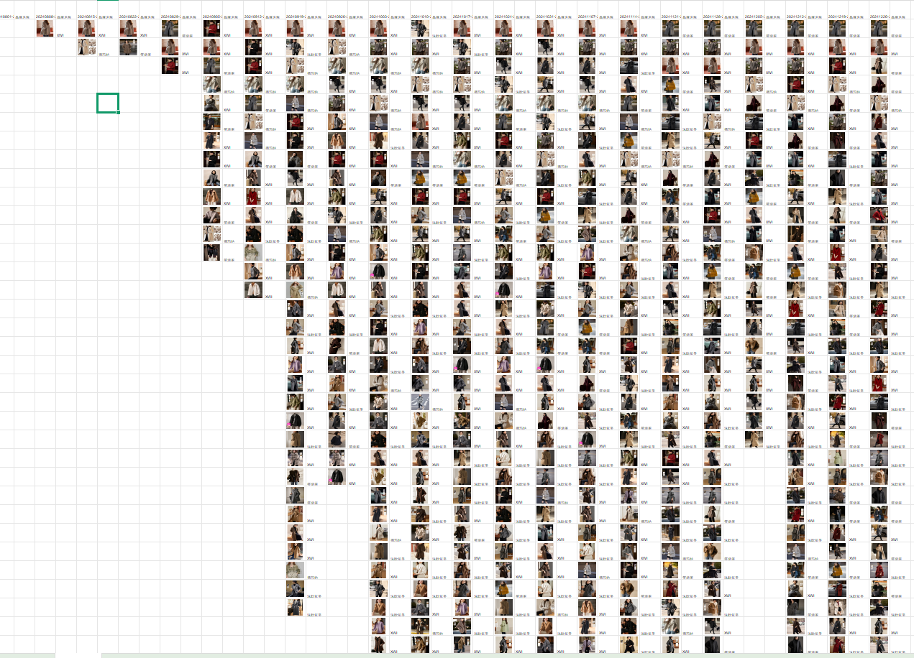

03 / AI 数据分析与自动化
让数据分析和重复操作，
变成可复用的系统。
从商品图数据提取、竞品色系分析，到 AI 预测和 RPA 执行，探索运营场景中的效率基建。
← 返回作品目录数据分析
以时间维度观察竞品主图色系变化，通过 AI 提取并分析商品图信息。未来可结合点击、转化、生命周期、气温等数据建立预测模型，辅助判断销量与走势。
流程自动化
用影刀 RPA 承接固定、重复的操作，并利用 Excel Macro 批量处理数据，让重复劳动变成可复用流程。
商品图数据矩阵
